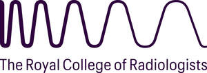
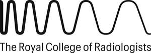

Trade Mark Journal No.2025/024 13 June 2025
UK00004170321 7 March 2025 (9,16,35,36,41,42,44)
Mark 1

Mark 2

The rights conferred by this registration are personal to The Royal College of Radiologists and may not be enforced or acquired by any licensee or assignee/transfere e of the said Royal College of Radiologists. This limitation shall not restrict The Royal College of Radiologists from permitting third parties to use the mark under contract.
- Class 9
- Downloadable publications; downloadable electronic publications; interactive electronic publications; downloadable educational media; podcasts; downloadable electronic publications distributed through an application programming interface (API); downloadable electronic publications in the field of medicine, health, healthcare, radiology, diagnostics and imaging; computer software; software applications; platform software; interface software; software applications for mobile devices; educational software; educational computer applications; downloadable computer software for use as an application programming interface (API); medical simulators [teaching aids]; virtual reality software for medical teaching; software applications for use in the field of healthcare, medicine, radiology, diagnostics, imaging, medical screening, medical scanning, medical treatment, medical testing and medical examination; software applications and downloadable electronic publications containing referral guidelines for medical, dental and healthcare professionals.
- Class 16
- Printed publications; magazines; periodical publications; educational publications; annuals [printed publications]; educational equipment; books; printed educational materials; printed educational, teaching, training and instructional materials; workbooks; medical journals; textbooks; mounts for X-ray negatives for non-medical purposes; printed examination, test, assessment and accreditation papers; printed examination certificates, materials and booklets; printed publications in the field of medicine, health, healthcare, radiology, diagnostics and imaging; magazines in the field of healthcare, medicine, radiology, diagnostics, imaging, medical screening, medical scanning, medical treatment, medical testing and medical examination.
- Class 35
- Recruitment services; employment agency services; personnel management; personnel recruitment; job agency services for medical personnel; recruitment of personnel in the field of healthcare, medicine, radiology, diagnostics, imaging, medical screening, medical scanning, medical treatment, medical testing and medical examination; arranging and conducting of events for business and/or networking purposes; arranging subscriptions to publications for others; work analysis to determine worker skill sets and other worker requirements; career information, planning and advisory services (other than education and training advice); career placement services; business and personnel management, consultancy and administration services; data and database management services; advertising, marketing and promotional services; hospital and clinician management services; commercial management services; business project management services; information, advisory and consultancy services relating to all the aforesaid services.
- Class 36
- Financial services; charitable services; charitable fundraising services; financial management of membership schemes; provision of grants and funding; financial grant services; providing grants for research in the field of healthcare, medicine, radiology, diagnostics, imaging, medical screening, medical scanning, medical treatment, medical testing and medical examination; financial investments and sponsorship; providing educational scholarships; information, advisory and consultancy services relating to all the aforesaid services.
- Class 41
- Educational services; teaching and training services; entertainment services; cultural services; research in the field of education and training; online educational services; remote learning services; arranging and conducting courses, seminars, webinars, events and workshops, all for educational, teaching, training, entertainment or cultural purposes; providing continuing medical education; educational services provided by colleges; academic and educational mentoring services; training, teaching and education services in the field of healthcare, medicine, radiology, diagnostics, imaging, medical screening, medical scanning, medical treatment, medical testing and medical examination; accreditation of educational services; accreditation [certifying] of educational achievement; accreditation of professional competency; education examination services; educational and professional competency assessment services; provision of educational examinations; awarding of educational certificates; issuing of educational awards; provision of educational examinations and tests; certification services in relation to educational awards; providing training and educational examination for certification purposes; devising and provision of qualifications; devising and provision of qualifications in the field of healthcare, medicine, radiology, diagnostics, imaging, medical screening, medical scanning, medical treatment, medical testing and medical examination; career counselling, coaching and advice; accreditation of professional competency in the field of healthcare, medicine, radiology, diagnostics, imaging, medical screening, medical scanning, medical treatment, medical testing and medical examination; educational and professional competency assessment services in the field of healthcare, medicine, radiology, diagnostics, imaging, medical screening, medical scanning, medical treatment, medical testing and medical examination; publishing services; electronic publishing services; publication of magazines; publication of medical texts; publication of printed matter; library services; lending of books and publications; dissemination of educational material; publication of publications in the field of healthcare, medicine, radiology, diagnostics, imaging, medical screening, medical scanning, medical treatment, medical testing and medical examination; non-downloadable electronic publications; providing non-downloadable electronic publications; provision of training, teaching and educational information via podcasts; production of podcasts; non-downloadable electronic publications in the field of healthcare, medicine, radiology, diagnostics, imaging, medical screening, medical scanning, medical treatment, medical testing and medical examination ; non-downloadable electronic publications distributed through an application programming interface (API); non-downloadable electronic publications containing referral guidelines for medical, dental and healthcare professionals; information, advisory and consultancy services relating to all the aforesaid services.
- Class 42
- Software as a Service [SaaS]; Platform as a Service [PaaS]; temporary use of non-downloadable computer software; providing temporary use of non-downloadable computer software for use as an application programming interface (API); Software as a Service [SaaS] and Platform as a Service [PaaS] in the field of healthcare, medicine, radiology, diagnostics, imaging, medical screening, medical scanning, medical treatment, medical testing and medical examination; computer programming services; design, development, maintenance, upgrading and repair of computer software and software applications; hosting a website featuring information in the field of healthcare, medicine, radiology, diagnostics, imaging, medical screening, medical scanning, medical treatment, medical testing and medical examination; design services; design of referral guidelines for medical, dental and healthcare professionals; application service provider (ASP); research services; scientific research; medical research; clinical research; research in to the use of artificial intelligence; research services in the field of healthcare, medicine, radiology, diagnostics, imaging, medical screening, medical scanning, medical treatment, medical testing and medical examination; testing, analysis and evaluation of the services of others for the purpose of certification; testing services for the certification of quality or standards; accreditation and certification services; certification [quality control]; certification of educational services; certification of medical services; certification of services in the field of healthcare, medicine, radiology, diagnostics, imaging, medical screening, medical scanning, medical treatment, medical testing and medical examination; information, advisory and consultancy services relating to all the aforesaid services.
- Class 44
- Information, advisory and consultancy services in the field of medicine, radiology, diagnostics and imaging; providing information in the field of healthcare, medicine, radiology, diagnostics, imaging, medical screening, medical scanning, medical treatment, medical testing and medical examination via a website; provision of medical information in the nature of referral guidelines for medical, dental and healthcare professionals; provision of medical advice in the form of referral guidelines for medical, dental and healthcare professionals.
Royal College of Radiologists
Representative: Kilburn & Strode LLP